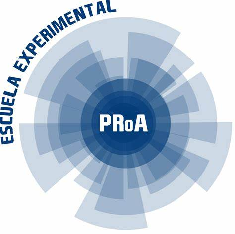
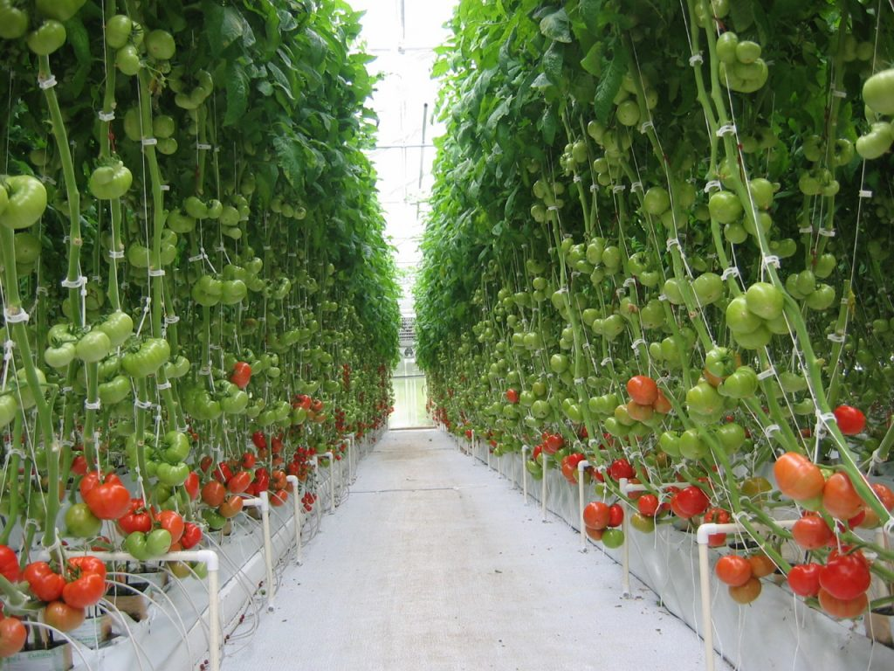
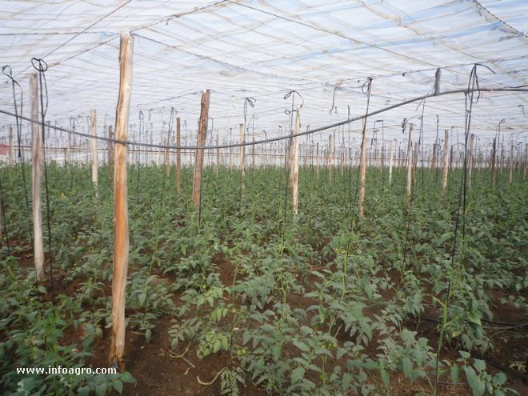

En colaboracion de la escuela ProA Villa Dolores y el invernadero Viverotronico

SOBRE NOSOTROS
Este proyecto web es realizado por alumnos de 6to año de la escuela ProA como parte de un curso por parte del Instituto Superior Politécnico de Córdoba como proyecto final de la cual dependen muchas de nuestras materias este se trata sobre el mundo del tomate su cultivo, sus variantes, ideamos una manera de combinar el mundo de la tecnología y la inteligencia con el cultivo de tomate un avance para la botanica y una idea creativa apartir del trabajo en equipo y para crear algo que pueda servir mas alla de solo un proyecto ideamos herramientas para expandir nuestros horizontes y alcance escolar serviremos de guia en cualquier problema de uso de esta, no dude en contactarnos.

